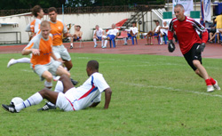
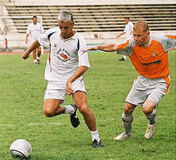
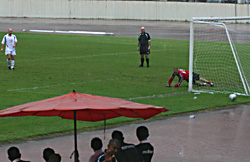
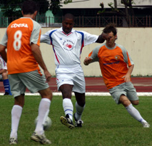
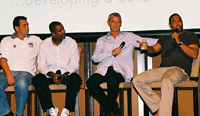
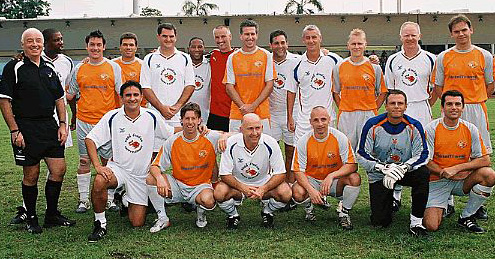

|
National Stadium, Bangkok, 2nd & 3rd June,
It's becoming a better known fact that there are a number of Open and Masters 7 a side football tournaments held in various cities around Asia, the most prestigious of which is the Hong Kong 7's. Also on the tour are Singapore, Bangkok, Manila, Penang, Phuket and Shanghai. Many of these tournaments attract professional teams' veterans squads and ex internationals to their masters competitions and U19's squads to the Opens (Man U & Arsenal U19's regularly attend Hong Kong 7's).
This past weekend, TML organizer, Sid Lloyd, made his way down to Thailand for the TESCO LOTUS BANGKOK MASTERS FOOTBALL TOURNAMENT, to study the feasibility of holding a similar International tournament in Tokyo and network with the organizers. Of course all work & no play makes Sid a dull boy and luckily he was invited to play for Bangkok Cosmos, with players he'd met in previous tournaments!
The quality of teams in the tournament was very high, with 3 teams of ex international players (Thailand Seniors, National team of Brunei & Team Bondi - their captain having been capped 40 times for Australia) and coming from as far away as Toronto, Canada. In the Over 35's category in which Cosmos were playing, the favourites were an all-star team consisting of Ian Rush (ex Liverpool & Wales), John Barnes (ex Liverpool & England), Viv Anderson (ex Man U & England), Clive Walker (ex Chelsea), Gus Caesar (ex Arsenal), Paul Masefiled (ex Birmingham), Richard Miranda (ex Juventus & Australia), Shebby Singh (ex Malasia) and Darrell Duffy (ex Aston Villa) - a very formidable line-up!
Bangkok Cosmos won all their group games on day 1, setting up a Semi Final tie with the all-star team on Sunday. In a fiercely contested match, the all-stars took a 2-0 lead through Duffy and Anderson before a beautifully taken goal by Kenny Gasser made it 2-1 at half-time. With the matches having 10 minute halves and the temperatures in the high 30's, fatigue was taking it's toll on the veteran players.
 The 2nd half was controlled much more by the visibly fitter Cosmos, but despite the likes of John Barnes being out of shape, he proved how dangerous he still is, with a couple of beautifully taken goals on the first day and some silky skills with the ball at his feet. But it was ex BFC Tokyo & Tottenham Hotspur player Jason Bailey who put a spanner in the works by scoring at close range after fine buid-up play by Cosmos midway through the half and only some fine saves from the keeper kept the score at 2-2 for full-time.
This set up for Penalty Shootout - 3 PKs each. First up stepped Ian Rush who's scored 2 PKs on the 1st day, firmly sending his shot at the lower left corner. Sid dove to his right, getting a firm hand to the shot but saw it slip inside the post in the torrential rain that had started to pour. Kenny stepped up to fire his home for 1-1 and then up stepped Clive Walker (Scorer of 2 goals for Chelsea in their 1978 FA Cup final win), who tried to go for the opposite corner to Rush but put his shot just wide of the post. Cosmos' Tim scored his followed by John Barnes who tucked his into the lefthand side under the keepers dive. It was the Cosmos captain Mauro Beck who scored the final PK giving Cosmos a 3-2 victory and a place in the final vs Bangkok Vikings.

The Final match was played on a much muddier pitch, the heavens having opened during the PK shootout, with accompanying thunder & lightening. Cosmos took control from the start and it was Kenny Gasser yet again who gave them the lead in the first half. Captain Mauro Beck finished the job with a goal in the 2nd and Cosmos ran out 2-0 winners.
The award ceremony dinner was a huge affair with around 500 people in the banquet hall of the Conrad International Hotel, Bangkok one of the main sponsors of the tournament with Tesco Lotus, who'd also utilized the 'star' players for children's soccer clinics at their stores around Thailand. Very humerous and interesting speeches were given by John Barnes (a funny description of his famous goal for England vs Brazil at the San Sero Stadium), Viv Anderson (the first black player to play for England) and Ian Rush (A legend in the European Cup) all hosted by Paul Masefield (now a very popular football presenter for Star Sports) Autographed memerobilia was auctioned off for charity and the stars were photographed with their fans.

The whole experience was a dream come true for lifelong Liverpool fan Sid and he is planning to give more TML players the opportunity to participate in these kind of events themselves by sending TML teams or mixed squads to upcoming Asian tournaments.
Already an all-star team is in the forming for the Phuket 7's in November in which Tokyo Hibernian has done well in the past. If you our your team are interested in playing please contact us.
5th Phuket International Soccer 7s
Dates: 24 & 25 November
Venue: Karon Stadium (which has just undergone a major refurbishment)
Categories: Open Age & Masters / Veterans (Over 35s with 3 players allowed between 30 & 35)
Entry fees: US$450 (for 10 players) US$500 (for 12 players)
More Information: http://www.soccer7s.reperages-thailand.com/
Report by Footy Japan

|